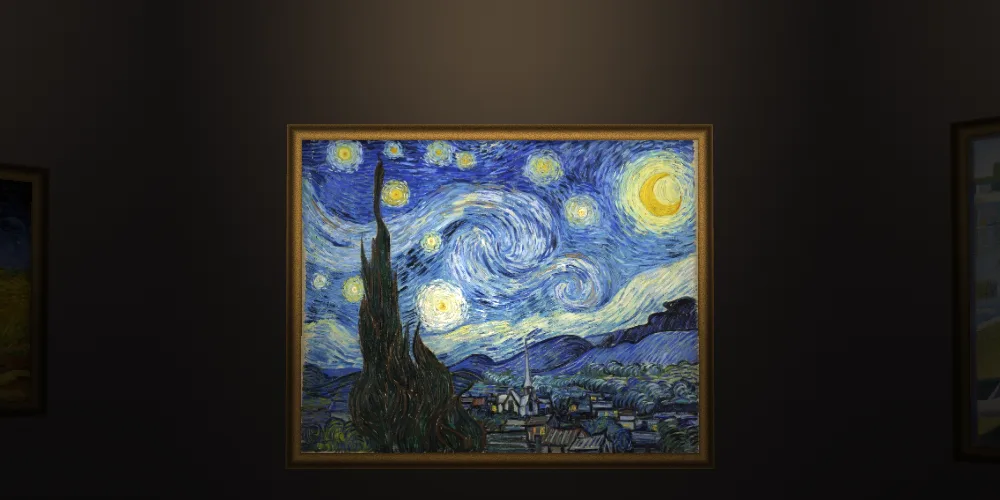
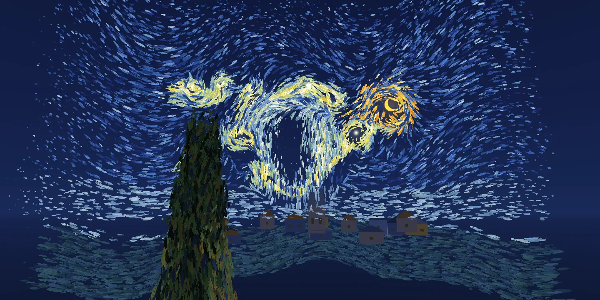
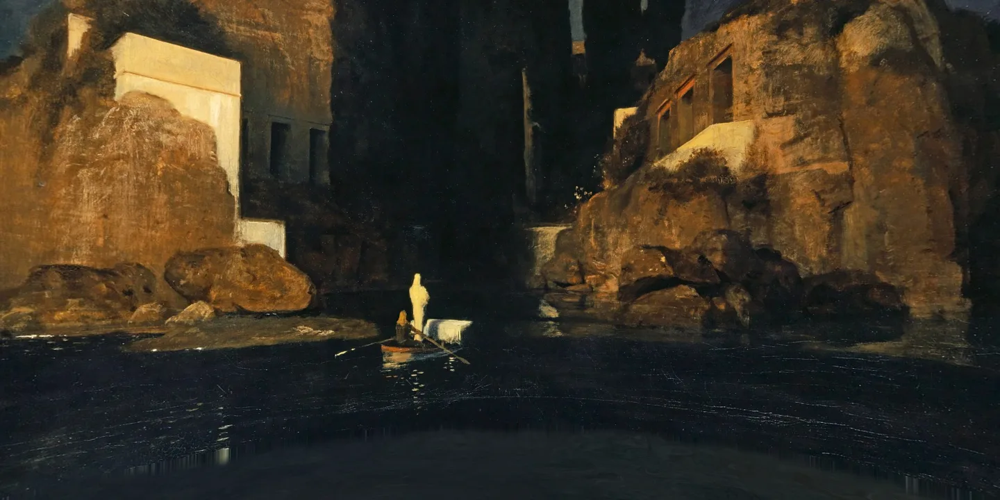
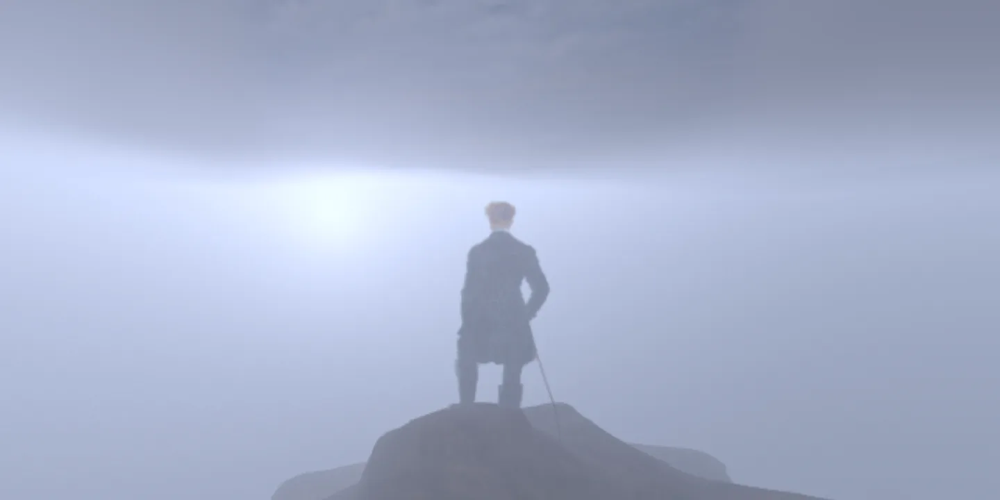
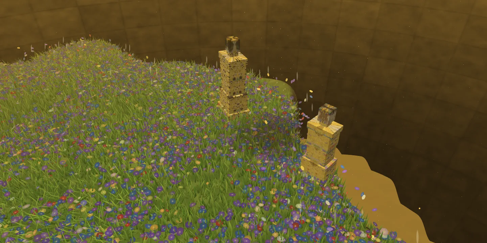
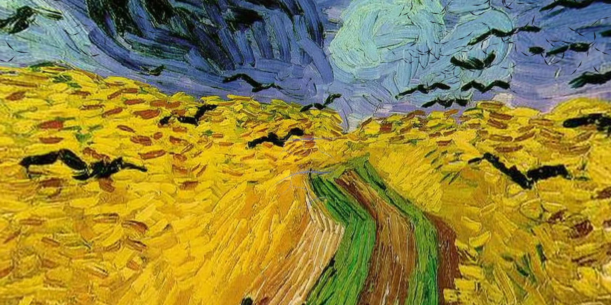
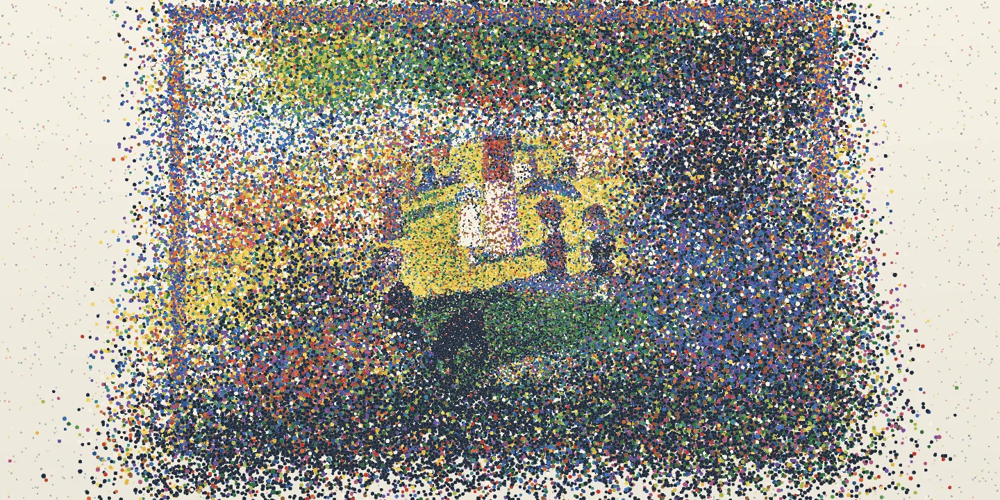
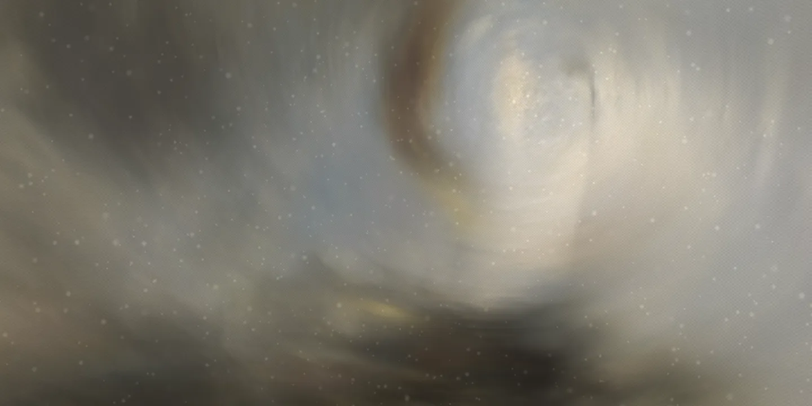
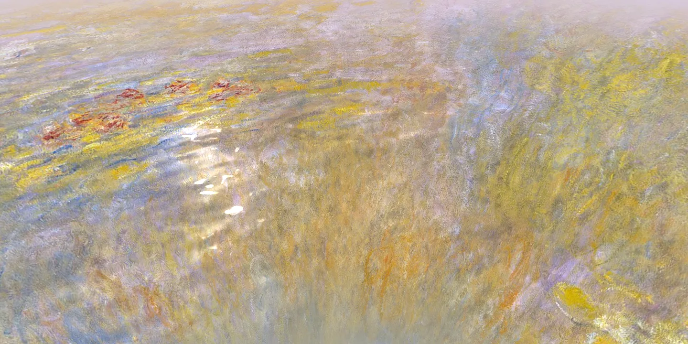

Into the Painting
Nine masterpieces, nine ways to step inside. WebXR reinterpretations of van Gogh, Seurat, Munch, Turner, Monet, Klimt, Böcklin and Friedrich, each built on one algorithm and one interaction.
Project Overview
Nine paintings hang in a ring in a dark room, with a single beam lighting the one in front of you. Step into any of them and the painting becomes a space with its own rule. Each piece pairs one simulation technique with one way of being present: your hands, your gaze, your stillness, your voice. The aim is not to animate a famous image but to find what the painting asks of the viewer and turn that into the interaction.
The Nine Rooms
To Reach a Star after van Gogh, 1889: fifteen thousand flowing brushstrokes make a rolling sky. Wave to stir the storm; point at a star and a ribbon of gold strokes climbs the cypress towards it.
Seeing Takes Time after Seurat: 150,000 pure-colour dots drift as a coloured fog and only resolve into pointillism where your gaze rests.
A Scream Through Nature after Munch: shoals of brushstroke fish circle you along a river and only return, forming one of Munch's five paintings, when you make a sound.
Lashed to the Mast after Turner, 1842: the whole Snow Storm is a real fluid wrapped around you. Stir it into a vortex; stop, and it slowly remembers itself.
Water Lilies after Monet: you stand in the middle of the pond. Touch the water to make ripples while gusts of wind break up the reflections.
This Kiss after Klimt, 1907–08: the flower meadow that ends at the lovers' feet becomes an island floating in gold. Bring your hands together and twenty thousand cubes slide into the embrace.
Where the Gaze Rests after Böcklin, 1880: the painting wraps all the way around you. Wherever you look catches fire, burning through to the same painting a century corroded.
Above the Sea of Fog after Friedrich: fog rolls over your head. Hold your gaze and it peels back layer by layer; the stiller you stand, the faster the sun rises.
Paths to Nowhere after van Gogh, 1890: a million slime-mould walkers grow glowing paths across Wheatfield with Crows, visible only within the circle of your gaze.
One Continuous Visit
The gallery is a ring-shaped dark room you can browse by dragging, scrolling or with the arrow keys. In a headset you enter VR once and never leave: look at or point to a painting to walk in, and move between works or back to the gallery inside the same XR session. Each transition unloads the previous work's listeners, timers, audio and GPU memory before loading the next. On desktop, the arrow keys, Page Up/Down and 1–9 jump between works.
Techniques
Flow-field brushstrokes, optical colour mixing, GPU boids, Stable Fluids, the wave equation, voxelised depth reliefs, reaction-diffusion burning, volumetric fog over SDF-fused sandstone, and Physarum transport networks. Depth, masks and corroded layers are baked offline from each painting with Python scripts, so the browser only does the live simulation.
Gallery








